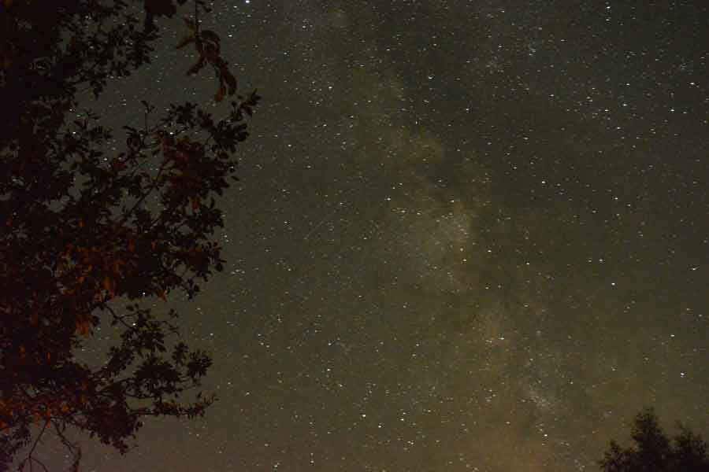
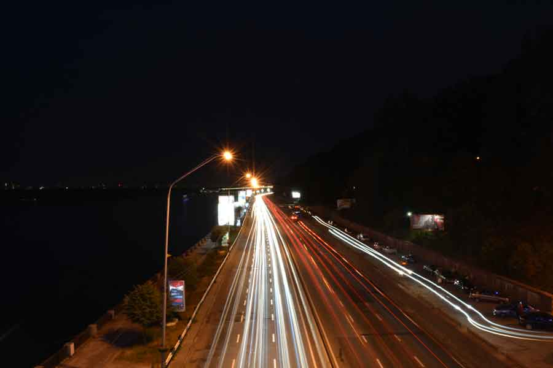
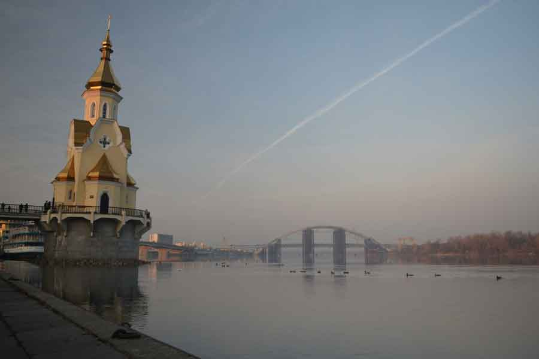

Машинное обучение - что это?
Вот, что нам говорит сайт MachineLearning.ru:
Машинное обучение (Machine Learning) — это обширный подраздел искусственного интеллекта, изучающий методы построения алгоритмов, способных обучаться. Машинное обучение находится на стыке математической статистики, методов оптимизации и классических математических дисциплин, но имеет также и собственную специфику, связанную с проблемами вычислительной эффективности и переобучения.
Машинное обучение — не только математическая, но и практическая, инженерная дисциплина. Чистая теория, как правило, не приводит сразу к методам и алгоритмам, применимым на практике. Чтобы заставить их хорошо работать, приходится изобретать дополнительные эвристики, компенсирующие несоответствие сделанных в теории предположений условиям реальных задач.
Применять на практике алгоритмы обучения на данных - это именно то, чем я буду заниматься в этом блоге.
Почему все о нем говорят?
Наше будущее зависит от взаимодействия между человеком и искусственным интеллектом. Не верите? Тогда послушайте визионера Kevin Kelly:
И этого недостаточно? Тогда вот еще 6 выступлений о важности машинного обучения и искусственного интеллекта.
Совет дня: начните изучать машинное обучение уже сейчас.
Материалы
- Отличная подборка материалов на русском языке от Кати Демидовой
- Еще одна замечательная подборка от Aleksander Veysov
Мои фото:
|  |  |
|
|  |  |
|
 |
 |  |